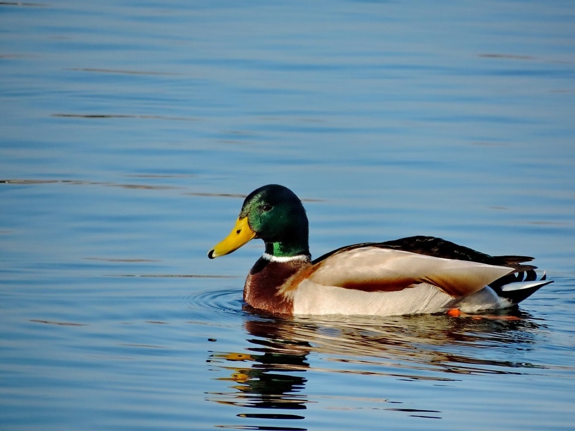

Elemento Media -> Text
Patos são animais onívoros que comem uma grande variedade de alimentos, incluindo plantas aquáticas, algas, insetos, pequenos peixes, minhocas e moluscos. Em cativeiro, consomem ração comercial, legumes (cenoura, repolho), frutas (banana, melão) e grãos como milho e aveia. Nunca dê pão, pois faz mal à saúde.
